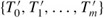
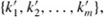
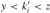
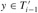
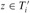
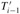
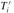

|
|
< Day Day Up > |
|
Deletion from a B-tree is analogous to insertion but a little more complicated, because a key may be deleted from any node-not just a leaf-and deletion from an internal node requires that the node's children be rearranged. As in insertion, we must guard against deletion producing a tree whose structure violates the B-tree properties. Just as we had to ensure that a node didn't get too big due to insertion, we must ensure that a node doesn't get too small during deletion (except that the root is allowed to have fewer than the minimum number t - 1 of keys, though it is not allowed to have more than the maximum number 2t - 1 of keys). Just as a simple insertion algorithm might have to back up if a node on the path to where the key was to be inserted was full, a simple approach to deletion might have to back up if a node (other than the root) along the path to where the key is to be deleted has the minimum number of keys.
Assume that procedure B-TREE-DELETE is asked to delete the key k from the subtree rooted at x. This procedure is structured to guarantee that whenever B-TREE-DELETE is called recursively on a node x, the number of keys in x is at least the minimum degree t. Note that this condition requires one more key than the minimum required by the usual B-tree conditions, so that sometimes a key may have to be moved into a child node before recursion descends to that child. This strengthened condition allows us to delete a key from the tree in one downward pass without having to "back up" (with one exception, which we'll explain). The following specification for deletion from a B-tree should be interpreted with the understanding that if it ever happens that the root node x becomes an internal node having no keys (this situation can occur in cases 2c and 3b, below), then x is deleted and x's only child c1[x] becomes the new root of the tree, decreasing the height of the tree by one and preserving the property that the root of the tree contains at least one key (unless the tree is empty).
We sketch how deletion works instead of presenting the pseudocode. Figure 18.8 illustrates the various cases of deleting keys from a B-tree.
If the key k is in node x and x is a leaf, delete the key k from x.
If the key k is in node x and x is an internal node, do the following.
If the child y that precedes k in node x has at least t keys, then find the predecessor k′ of k in the subtree rooted at y. Recursively delete k′, and replace k by k′ in x. (Finding k′ and deleting it can be performed in a single downward pass.)
Symmetrically, if the child z that follows k in node x has at least t keys, then find the successor k′ of k in the subtree rooted at z. Recursively delete k′, and replace k by k′ in x. (Finding k′ and deleting it can be performed in a single downward pass.)
Otherwise, if both y and z have only t - 1 keys, merge k and all of z into y, so that x loses both k and the pointer to z, and y now contains 2t - 1 keys. Then, free z and recursively delete k from y.
If the key k is not present in internal node x, determine the root ci[x] of the appropriate subtree that must contain k, if k is in the tree at all. If ci[x] has only t - 1 keys, execute step 3a or 3b as necessary to guarantee that we descend to a node containing at least t keys. Then, finish by recursing on the appropriate child of x.
If ci[x] has only t - 1 keys but has an immediate sibling with at least t keys, give ci[x] an extra key by moving a key from x down into ci[x], moving a key from ci[x]'s immediate left or right sibling up into x, and moving the appropriate child pointer from the sibling into ci[x].
If ci[x] and both of ci[x]'s immediate siblings have t - 1 keys, merge ci[x] with one sibling, which involves moving a key from x down into the new merged node to become the median key for that node.
Since most of the keys in a B-tree are in the leaves, we may expect that in practice, deletion operations are most often used to delete keys from leaves. The B-TREE-DELETE procedure then acts in one downward pass through the tree, without having to back up. When deleting a key in an internal node, however, the procedure makes a downward pass through the tree but may have to return to the node from which the key was deleted to replace the key with its predecessor or successor (cases 2a and 2b).
Although this procedure seems complicated, it involves only O(h) disk operations for a B-tree of height h, since only O(1) calls to DISK-READ and DISK-WRITE are made between recursive invocations of the procedure. The CPU time required is O(th) = O(t logt n).
Consider implementing a stack in a computer that has a relatively small amount of fast primary memory and a relatively large amount of slower disk storage. The operations PUSH and POP are supported on single-word values. The stack we wish to support can grow to be much larger than can fit in memory, and thus most of it must be stored on disk.
A simple, but inefficient, stack implementation keeps the entire stack on disk. We maintain in memory a stack pointer, which is the disk address of the top element on the stack. If the pointer has value p, the top element is the (p mod m)th word on page ⌊p/m⌋ of the disk, where m is the number of words per page.
To implement the PUSH operation, we increment the stack pointer, read the appropriate page into memory from disk, copy the element to be pushed to the appropriate word on the page, and write the page back to disk. A POP operation is similar. We decrement the stack pointer, read in the appropriate page from disk, and return the top of the stack. We need not write back the page, since it was not modified.
Because disk operations are relatively expensive, we count two costs for any implementation: the total number of disk accesses and the total CPU time. Any disk access to a page of m words incurs charges of one disk access and Θ(m) CPU time.
Asymptotically, what is the worst-case number of disk accesses for n stack operations using this simple implementation? What is the CPU time for n stack operations? (Express your answer in terms of m and n for this and subsequent parts.)
Now consider a stack implementation in which we keep one page of the stack in memory. (We also maintain a small amount of memory to keep track of which page is currently in memory.) We can perform a stack operation only if the relevant disk page resides in memory. If necessary, the page currently in memory can be written to the disk and the new page read in from the disk to memory. If the relevant disk page is already in memory, then no disk accesses are required.
What is the worst-case number of disk accesses required for n PUSH operations? What is the CPU time?
What is the worst-case number of disk accesses required for n stack operations? What is the CPU time?
Suppose that we now implement the stack by keeping two pages in memory (in addition to a small number of words for bookkeeping).
Describe how to manage the stack pages so that the amortized number of disk accesses for any stack operation is O(1/m) and the amortized CPU time for any stack operation is O(1).
The join operation takes two dynamic sets S′ and S″ and an element x such that for any x′ ∈ S′ and x″ ∈ S″, we have key[x′] < key[x] < key[x″]. It returns a set S = S′ ∪ {x} ∪ S″. The split operation is like an "inverse" join: given a dynamic set S and an element x ∈ S, it creates a set S′ consisting of all elements in S - {x} whose keys are less than key[x] and a set S″ consisting of all elements in S - {x} whose keys are greater than key[x]. In this problem, we investigate how to implement these operations on 2-3-4 trees. We assume for convenience that elements consist only of keys and that all key values are distinct.
Show how to maintain, for every node x of a 2-3-4 tree, the height of the subtree rooted at x as a field height[x]. Make sure that your implementation does not affect the asymptotic running times of searching, insertion, and deletion.
Show how to implement the join operation. Given two 2-3-4 trees T′ and T″ and a key k, the join should run in O(1 + |h′ - h″|) time, where h′ and h″ are the heights of T′ and T″, respectively.
Consider the path p from the root of a 2-3-4 tree T to a given key k, the set S′ of keys in T that are less than k, and the set S″ of keys in T that are greater than k. Show that p breaks S′ into a set of trees  and a set of keys  where, for i = 1, 2, ..., m, we have  for any keys  and . What is the relationship between the heights of  and ? Describe how p breaks S″ into sets of trees and keys.
Show how to implement the split operation on T. Use the join operation to assemble the keys in S′ into a single 2-3-4 tree T′ and the keys in S″ into a single 2-3-4 tree T″. The running time of the split operation should be O(lg n), where n is the number of keys in T. (Hint: The costs for joining should telescope.)
|
|
< Day Day Up > |
|